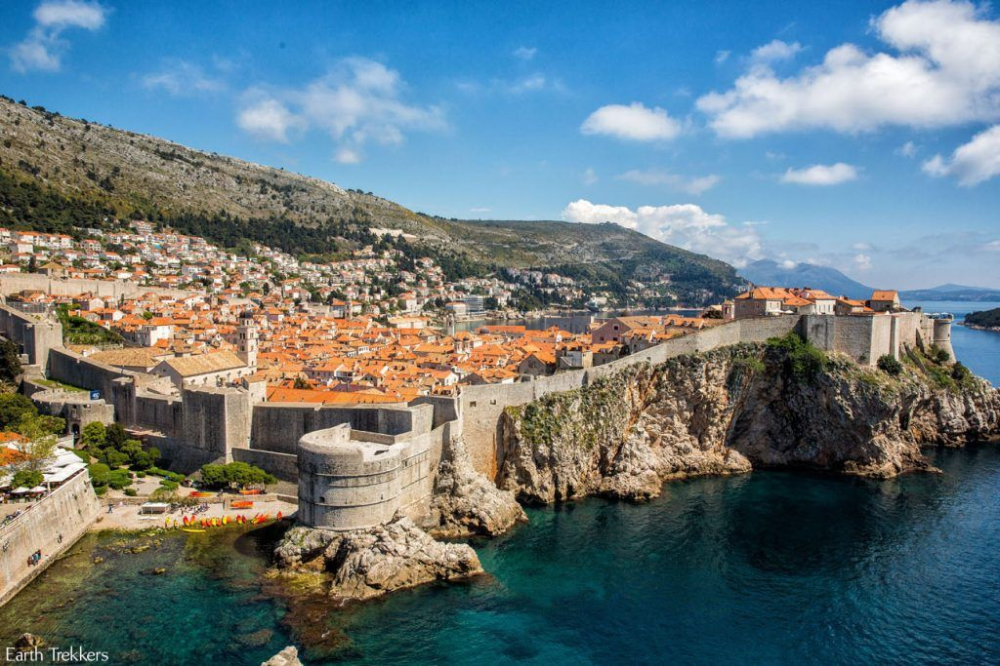
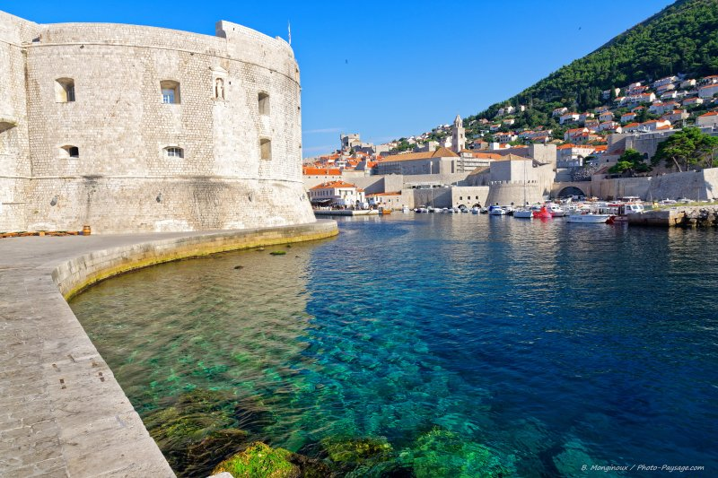
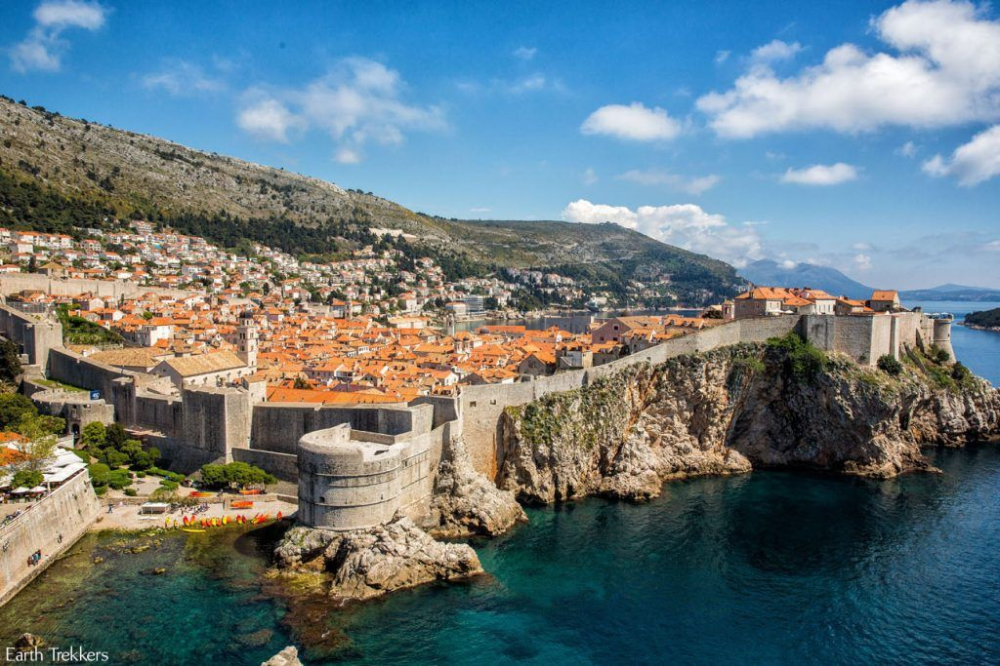
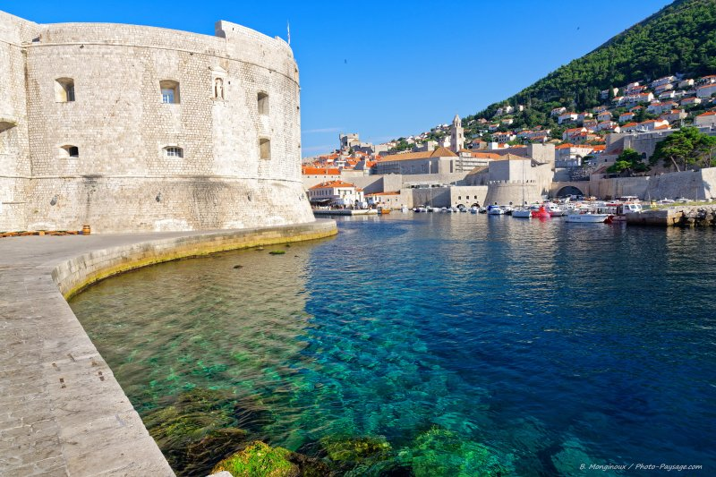
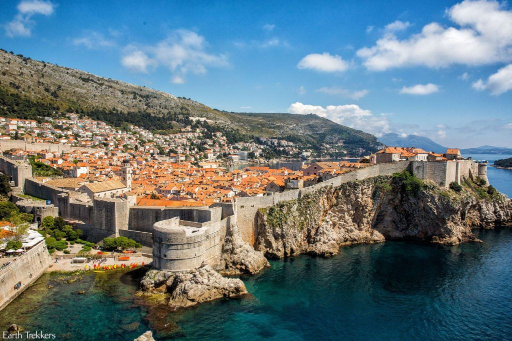
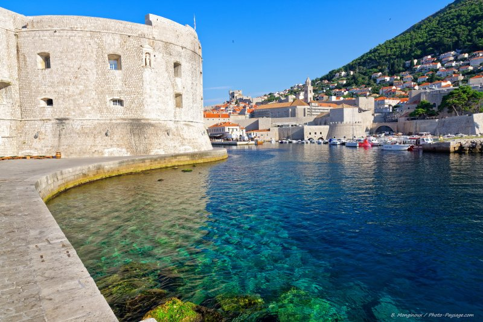

Dubrovnik et ses remparts reçoivent chaque année de plus en plus de visiteurs. Cette ville du sud de la Croatie est un incontournable que je conseille fortement de placer dans votre itinéraire. Mais où se loger à Dubrovnik ? Si vous parvenez à trouver un hôtel à l’intérieur des remparts, entre la Porte Pile et celle de Plocé, ce serait bien sûr l’idéal. Par contre, notez qu’au-dessus des remparts, les rues grimpent fortement et les retours vers votre logement seront difficiles, malgré une position centrale. Ainsi, il est préférable de choisir un logement à l’ouest ou à l’est de la zone fortifiée. Par exemple, à proximité de la plage de Bellevue ou de celle de Banje de l’autre côté. Vous y trouverez des prix intéressants et plus de calme. De plus, le centre-ville reste facilement accessible à pied.
Avantages : Si vous choisissez de logez dans la zone fortifiée ou jusqu’au fort Lovrijenac, vous bénéficierez d’une proximité avec les principales attractions de la ville, les restaurants ainsi que la vie nocturne. Cependant, loger un peu plus à l’ouest vous permettra de vous détendre dans un quartier tranquille et de profiter de belles plages moins fréquentées.


Split est une ville agréable à visiter, où l’on ressent une certaine douceur de vivre. Mais l’un de ses atouts réside également dans sa position centrale en Croatie. Si vous ne voulez pas faire beaucoup de route ou si vous n’avez pas prévu de louer une voiture lors de votre voyage, Split est la ville idéale pour loger en Croatie. En effet, vous pourrez d’ici rejoindre le charmant village de Trogir en 30 minutes, ou encore Sibenik et le parc national de Krka en une heure. De plus, vous pourrez prendre le ferry depuis Split pour vous rendre sur l’île de Brac ou de Hvar et faire une excursion à la journée pour découvrir la grotte bleue. En bref, Split est vraiment idéale pour avoir une vision globale de la Croatie.
Avantages : Cette ville en bord de mer est à privilégier pour découvrir les différents aspects de la Croatie lors d’un court séjour ou en conduisant le moins possible. Elle vous assurera tranquillité et de bonnes adresses où manger après vos journées de visite.
CLes centaines de cascades du parc national de Plitvice attirent une foule de touristes à l’arrivée des beaux jours. Chaque jour, ils se pressent par centaines sur les pontons en bois pour admirer la couleur émeraude de ses eaux… Et vous y viendrez aussi je suppose.C’est pourquoi la meilleure solution pour en profiter sera d’aller à Plitvice tôt le matin. Cela vous permettra d’aller à votre rythme, au calme, sans être ralenti ou pressé par les autres.
Pour cela, rien de mieux que de loger dans un hôtel autour de l’entrée du parc. Les prix seront forcément plus élevés qu’ailleurs en Croatie, mais cet investissement vous donnera rapidement le sourire en ayant le parc national rien que pour vous au lever du jour. Il existe notamment des petits lodges ou chalets qui offrent une ambiance authentique et chaleureuse, proches de la nature. Dormir chez l’habitant peut aussi être une bonne idée pour recueillir tous ses conseils sur la façon de visiter le parc selon vos envies. Cependant, n’oubliez pas de vous assurer que le petit-déjeuner est servi tôt, afin de vous aventurer dans le Parc National de Plitvice dès son ouverture.
Avantages : Dormir à côté de Plitvice est la meilleure solution pour visiter le parc national en évitant la foule. Bien que le prix des logements y soit un peu plus élevé qu’ailleurs, vous ne regretterez pas votre choix.

Zadar est une ville baignée par le soleil presque tout au long de l’année. Elle permet d’accéder facilement au village ancien de Sibenik ou au parc national de Plitvice, mais reste assez excentrée des autres points d’intérêts du pays. Cependant, pas d’inquiétude, son centre historique, ses monuments et son orgue marine sauront vous occuper un bon moment. Son aéroport est souvent un bon point de départ ou d’arrivée lors d’un road trip en Croatie. Si vous avez une voiture, vous pourrez cependant choisir de loger en dehors du centre-ville de Zadar, notamment à l’ouest de la ville, où les prestations sont nombreuses et le rapport qualité-prix excellent.
Avantages : L’atmosphère de Zadar est restée très authentique et vous plaira forcément. Cette ville pourra ainsi marquer le début ou la fin de votre voyage, avec un logement à moindre coût.